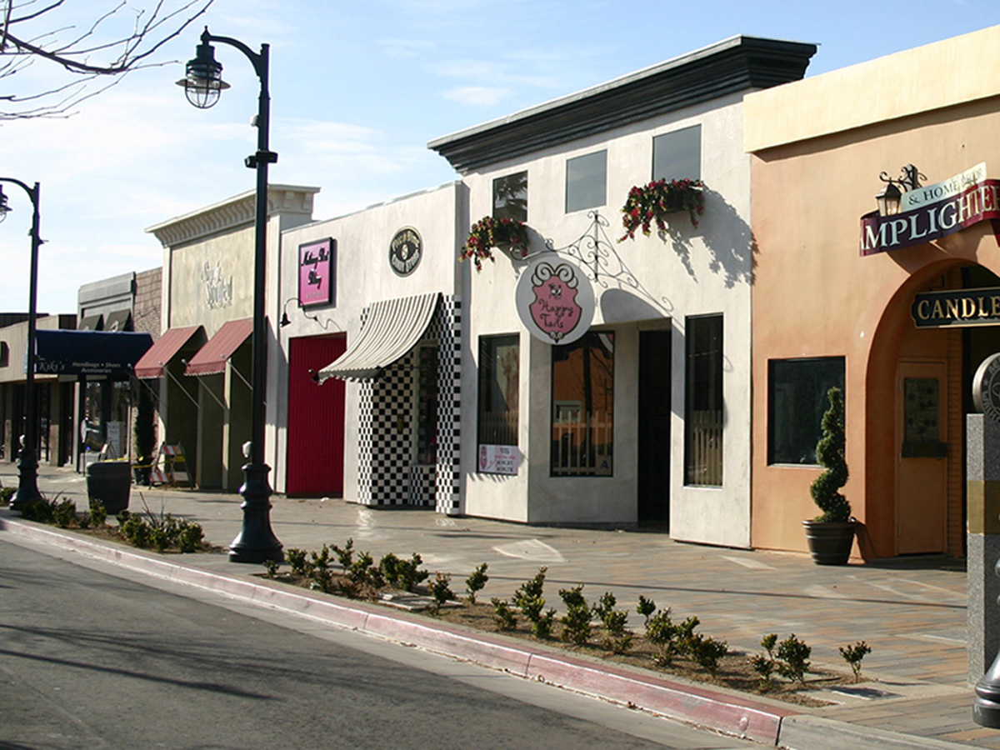

Shopping
From the local fine art at The Graphic Experience, to the unique home decor at The Lamplighter, to the specialty bath salts bar at The Forge Store, you are certain to find that one-of-a-kind something special for any occasion.
The BLVD is proud of the creativity of its local restaurants. Whether you prefer a perfect grill or crave a crepe, you will find something to satisfy every taste. Enjoy the food and atmosphere while visiting with owners and chefs, making your experience more comfortable, personal and friendly.
Plus, don't miss the Farmer's Market every Thursday for fresh local produce and unique gourmet foods from local businesses, as well as a variety of other vendors.
Entertainment
The BLVD is the home of a number of venues that delight thousands of visitors every month.
The Lancaster Performing Arts Center hosts local and international theater, music, and dance performances. From Swan Lake to Spamalot, you will find something to enjoy at this state-of-the-art facility.
The new Museum of Art and History houses special collections of artifacts that feature the rich historical and cultural history of the Antelope Valley.
The Artist Lofts Gallery features rotating special exhibits by resident artists, as well as periodic meet-the-artist receptions and private showings.
Special Events

The BLVD offers a number of free special events throughout the year, guaranteed to delight the entire family.
The Streets of Lancaster Grand Prix in September is an exciting weekend of professional and amateur go-cart racing. The only street race of its kind west of the Mississippi River!
The BooLVD in October features free trick-or-treating at area businesses, and a variety of Halloween-themed entertainment.
Celebrate America in November pays tribute to our rich national history. Don't miss the live music, vintage car show, street festival, and fireworks.
A Magical BLVD Christmas in December brings the sights and sounds of the holiday season to the desert with carolers, a Christkindlmarkt, and a variety of holiday-themed activities.